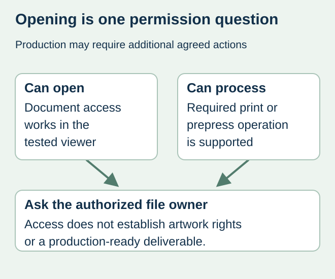
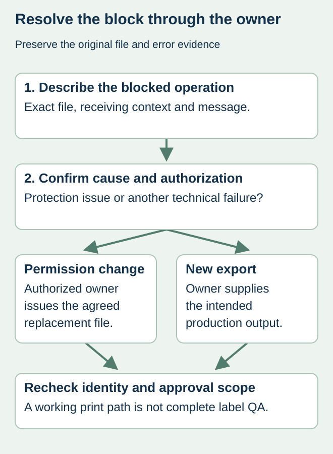

The label PDF opens normally on a buyer’s computer, but the converter cannot perform the required printing or preparation operation. The buyer resends the same file with an opening password. That may leave the actual permissions problem unchanged.
Identify the blocked operation and ask the authorized file owner for a production deliverable with the agreed permissions. Keep the file-rights question separate from technical preflight and visible-content approval. A file that opens successfully is not necessarily the intended production authority.


Distinguish access from permitted operations
Adobe’s PDF password documentation distinguishes document-opening protection from permissions controlling actions such as printing and editing. Available controls and behavior depend on the file and receiving workflow. Ask the converter to describe its actual restriction rather than guessing that every failure requires the same password.
An opening password, permission to change a file and ownership of its underlying artwork are different matters. Use the business’s approved private channel for any authorized credential exchange. Do not send protected customer files to an unknown online unlocking service or substitute an unrelated export without the owner’s agreement.
Record the restriction precisely
| Handoff field | What to identify | Question for the owner |
|---|---|---|
| File authority | Exact filename/revision and intended role | Is this the production output or a protected review copy? |
| Blocked action | Printing, editing or another stated operation | Which permissions does the agreed work require? |
| Receiving context | Converter workflow and actual message | Is protection the identified cause or still a hypothesis? |
| Authorized remedy | Replacement output or agreed permission change | Who may issue it and what must remain unchanged? |
| Replacement check | New file identity, content and technical review | Does the remedy preserve the approved label? |
A generic “corrupt PDF” message may not establish a permissions issue. Preserve the message and let the relevant technical owners distinguish protection from an unsupported format, damaged transfer or other failure. Do not repeatedly resave the document and lose the original evidence.


Request a controlled replacement
For a hypothetical food-label project, the design agency supplied a secured presentation PDF while the agreed production output was still pending. The right response is to obtain that authorized output and identify its revision. A screenshot rebuilt into a new PDF does not inherit the source’s production quality, technical layers or approval history.
If the owner changes permission settings on the intended production file, retain the resulting file identity and ask the converter to confirm that the necessary operation is now supported. If the owner instead re-exports from the design source, compare the replacement’s content and technical features as a new output rather than assuming settings were the only change.
Recheck scope before using the replacement
Verify visible copy, intended dimensions, relevant technical separations and code content within the responsible parties’ review scopes. Keep any physical appearance or performance evidence identified separately. Successful printing after a restriction is resolved does not establish color accuracy or complete label readiness.
The artwork-rights guide helps define the contracted deliverable and lawful dependencies. The file-handoff guide identifies the production authority. Record the accepted replacement, superseded reference and remaining open items before the print order proceeds.
Discuss the unresolved label requirement
State the exact operation blocked, file revision, error message and receiving converter’s requirement. Ask the authorized file owner for a suitable production deliverable; do not put passwords in the public inquiry or artwork notes. Prepare a label specification inquiry. The contact page opens an email draft and lists email or WhatsApp for attachments. Supply, proof options, testing, pricing and timing require project confirmation.